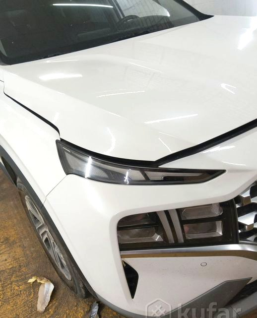

Пороги, арки, поддомкратники, лонжероны
Варим кузов, а не закрашиваем ржавчину. Выбирайте элемент — покажем, как проходит работа и где обычно ошибаются.
Что делаем с конкретным узлом
Нажмите на элемент: увидите порядок работ и главную ошибку, которую допускают при ремонте.
Без антикора сварка не живёт
Сварной шов — первое место, где снова пойдёт ржавчина, если его не закрыть.
Зачистка шва
Снимаем окалину и наплывы, чтобы герметик лёг ровно.
Герметик
По заводским швам и стыкам — тот же профиль, что с завода.
Скрытые полости
Пороги и лонжероны обрабатываем изнутри через технологические отверстия.
Днище
Антикоррозийная обработка + защита от гравия, иначе пескоструит колёсами.
Пескоструйная очистка
Где нужно — снимаем ржавчину и старую краску струёй, а не шкуркой вручную.
До чистого металла
Поверхность под сварку и антикор готовим пескоструем.
Пайка бамперов
Трещины и оторванные крепления паяем, а не склеиваем.
Ремонт глушителей
Варим глушитель и трубы, включая фланцы и крепления.
О сварке
Честно о том, что можно спасти, а что проще заменить.
Покажите, что с порогами
Сфотографируйте проблемное место — скажем, ремонт это или замена, и сколько примерно займёт.